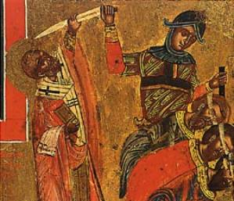

The Legend of the Three Generals – Part 2
Having prayed together, and having received from St.
Nicholas a blessing for their journey, the three generals – Herpylion,
Nepotianus and Ursus – set out for Phrygia to fulfill the royal command given
to them by Emperor Constantine. Arriving at the place of the revolt, they
quickly suppress it and, having fulfilled the royal commission, they return
with joy to Constantinople. They report to Constantine that their campaign was
“completed without bloodshed.” Highly pleased, the emperor rewards them with
gifts and gives them a promotion.
This triumph causes envy among their rivals at the
imperial court, who tell Evlavius (the imperial chancellor) that the three
generals have given the emperor a totally false account of their Phrygian
intervention. Instead of subduing the revolt and strengthening the emperor, the
accusers say, the generals used their soldiers to join the rebellion for
personal advantage.
“Are you aware of what these men have actually
done?” the chancellor is asked. “The emperor sent them to subdue the Taiphalis.
Instead, they made common cause with these rebels. They even talked their own
soldiers into disloyalty to the emperor, persuading them to join the Taiphalis,
so that they might reign over the territory as emperors themselves!”
To make doubly sure the generals will be eliminated, their rivals also offer Evlavius a bribe. Even before passing this vicious gossip on to the emperor, Evlavius has the three generals imprisoned although he gives no reason for this surprise action.
Evlavius is, however, cautious enough to await direct news from Phrygia before either advising the emperor or taking drastic action against the generals.
Their rivals become uneasy. Afraid that their false accusations may be exposed, they give Evlavius still more gold, urging that the generals be put to death quickly. Otherwise, they say, they might get in touch with the Taiphalis, who then might raid the jail and set them free.
Evlavius doesn’t want the deaths of the three
generals on his hands, nor does he want to pay back the bribe money. Instead,
he calls on the emperor, apparently quite upset, and gives this version of his dilemma: “Long live the emperor! The three
generals you sent to subdue the Taiphalis did not, I am told, actually carry out your orders. Instead, Ursus,
Nepotianus and Herpylion allied themselves with the rebels and are planning to
act against your Majesty. I’ve put them in prison. Your Majesty must decide
whether they should be executed for their betrayal, or whether you want to
punish them in some other way. In any event, their fate should be a lesson to
other would-be traitors.”
The emperor, without any investigation, orders the commanders to be confined in prison. Languishing in jail, and conscious of their innocence, the commanders are perplexed as to why they’re being held prisoner.
As the days go by, their rivals begin to fear that
their slander and evil will come to light and they themselves might suffer. Therefore, they come to Evlavius and
fervently beg him to condemn them to death quickly.
Ensnared in the nets of greed, Evlavius is obliged to carry out what is promised to the end. He immediately reports to the emperor and, like a messenger of evil, appears before him with a sad face and tear-filled eyes. Along with this, he wishes to show that he’s very much concerned about the life of the emperor and truly devoted to him. Striving to incite the emperor’s anger against them, he begins his cunning speech, filled with lies, saying: “O emperor, not one of those shut in prison wishes to repent. All of them persist in their evil design, not ceasing to plot intrigues against you. Therefore, command without delay to hand them over to torture, so that they won’t anticipate us and accomplish their evil deed, which they planned against the military commanders and you.”
Emperor Constantine assumes that this is correct and
orders the accused to be executed. Evlavius puts the order into writing and
sends it to the prison, where the guard over them soon learns of it.
Having privately shed many tears over such a disaster threatening the innocent, the guard goes to the generals and says to them: “For me it would have been better if I hadn’t known you and hadn’t enjoyed pleasant conversation and repast with you. Then I’d easily bear separation from you and wouldn’t lament over the disaster coming upon you. Morning will come, and the final and horrible separation will overtake us. I already do not see your faces dear to me, and do not hear your voice, because the emperor ordered to execute you. Instruct me how to deal with your possessions while there’s yet time, and death hasn’t yet prevented you from expressing your will.”
The generals are shocked. They consider themselves
the emperor’s most reliable commanders. And now, without official accusation or
explanation, they’re condemned by the very one whose cause they have so
skillfully defended! It makes no sense, and they’re desperate. “How did we
offend either God or emperor, they wonder, that we should be treated this way?
What sin did we commit, that we should have to pay with our lives?”
Nepotianus says to the other two generals: “At this point, my brothers, human power can’t save us. Remember what happened in Myra of Lycia, where the Great Nicholas saved three men from an unjust death? Perhaps the same can be done to help us out of our desperate dilemma. Surely, no one else can help us. We are bewildered with grief and agony of the heart. Our voices have dried up. Our tongues can’t move. We aren’t even capable of praying. Come then, let us plead with God and St. Nicholas. Perhaps the Saint will somehow manage to come and save us.”

With tears in their eyes, they pray out loud:
“Lord, God of our Father Nicholas who saved the three men of Myra from
an unjust death, come in time, Lord, and don’t ignore our injustice, nor forget
us who are in danger of our lives. Free us from the hands of our enemies. Don’t
delay, for we’re condemned to die tomorrow.”
Thought to Ponder: In Rome, the oldest St.
Nicholas church might be St. Nicola in Carcere, built alongside a prison,
constructed before Pope Hadrian (772 to 795). This church had obtained a papal
permission to pardon a condemned prisoner on the Feast of St. Nicholas, an act
probably suggested by this legend, which was also the first to appear in Latin.
Thought to Discuss around the Dinner Table: How are we called to do the
same? How can our own trials provide hope to others who are still in need? Who
do we need to free this Christmas from the prison of grudges and unforgiveness?
As the Bible says, “And be kind
to one another, tenderhearted, forgiving one another, even as God in Christ
forgave you.” (Ephesians 4:32 NKJV)
“Help us, Lord, to begin our journey to the Manger free from our burden of guilt, hate, vengefulness, and bitterness. In Christ’s name we pray. Amen!”
The Legend of the Three Generals – Part 2